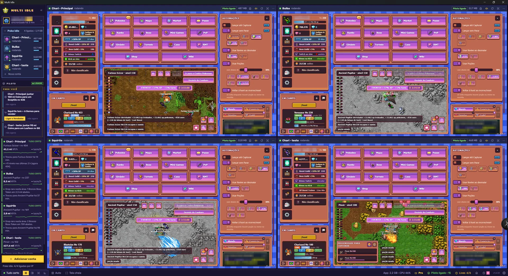
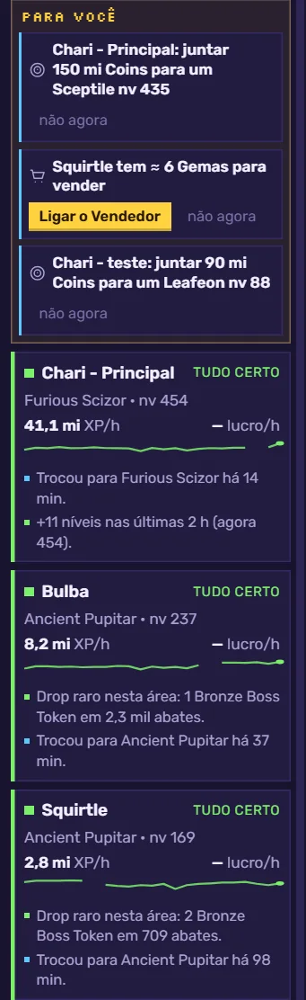

Para PokeIdle · Windows 10 e 11
Suas contas farmando juntas. Você só decide o que importa.
O Multi Idle abre até 4 contas do PokeIdle lado a lado, mantém todas caçando mesmo com a janela minimizada e cuida da rotina: Passe, poções, troca de hunt, Mercado. Compra e venda só acontecem com a sua aprovação.
Grátis para uma conta, sem cartão. Pro a partir de R$ 9,90.
- Sem anúncios
- Senhas só no seu PC
- Atualiza sozinho

Por que usar
Jogar com várias contas no navegador dá trabalho demais
Quem tem mais de uma conta conhece a rotina. O Multi Idle foi feito para acabar com ela.
No navegador
- A aba minimizada desacelera e a conta para de render.
- O time cai de madrugada e a conta passa a noite parada.
- Um dia sem resgatar o Passe e a trilha volta ao Dia 1.
- Login caindo, janela anônima, perfil trocado: toda hora refazendo.
- Você não sabe quanto cada conta rende nem o que caiu de raro.
No Multi Idle
- Todas as contas na velocidade cheia, mesmo com a janela escondida.
- O Piloto cura a equipe, repõe poções e volta para a mesma hunt.
- O Passe é resgatado logo depois da meia-noite, em todas as contas.
- Cada conta tem o próprio login guardado, separado das outras.
- XP por hora, drops raros e um resumo do dia para cada conta.
Recursos
Um app feito só para isso
Contas lado a lado
Grade, uma conta principal com as outras ao lado, foco numa só ou um painel com o resumo de todas. Cada conta no próprio espaço.
Nunca dorme
Minimizado, atrás de outra janela ou na bandeja do Windows, as contas continuam caçando na mesma velocidade.
Página de cada conta
Gráficos de 7 dias de XP, Coins e abates, previsão de quando a conta chega ao próximo nível-chave, drops raros e o resumo do dia.
Cofre de logins
Se a sessão cair, o app preenche a tela de login. A senha fica criptografada pelo Windows no seu PC e nunca vai para a internet.
Lives da Twitch e da Kick
Cada conta assiste às lives oficiais com o próprio login para juntar pontos do canal. As lives rodam separadas, sem pesar nas contas.
Jogou no celular? Ele volta
Quando aparece "Conta aberta em outro lugar", o app confere a cada minuto e retoma a conta no PC assim que você sai do celular.
Extensões do Chrome
Instale extensões como a /hunt e escolha em quais contas cada uma roda.
Leve no PC
Contas fora da tela gastam menos placa de vídeo. A conta que passar do limite de memória é reaberta sozinha, na hora em que está parada.
Sua configuração em qualquer PC
Entre com e-mail, Google ou Discord e as contas, os grupos e os ajustes vêm junto. Copie as automações de uma conta para as outras num clique.
O Piloto
Ele cuida da rotina e pergunta antes de mexer no seu bolso
O Piloto lê a tela do jogo e aperta os botões certos: resgata o Passe, repõe poções, troca de hunt, volta depois que o time cai. Você liga cada automação conta por conta. O que envolve comprar ou vender chega como um pedido para você aprovar.
Primeiro, ele só mostra o que faria
No começo o Piloto não toca no jogo. Ele escreve no Histórico cada ação que tomaria, e você confere com calma.
Depois, ele age de verdade
Ligue quando estiver confiante. O painel lateral mostra cada conta, quanto rende por hora e o que já foi feito hoje.
Ele nunca disputa o mouse
Clicou dentro de uma conta? O Piloto pausa nela por 2 minutos e espera você terminar.

Segurança
Você no controle, o tempo todo
Automação boa é a que você consegue conferir, limitar e desligar.
O que o Multi Idle não faz
- Não promete dinheiro. Ele faz suas contas renderem mais e mostra o que vale vender. Quanto cai e por quanto vende depende do jogo.
- Não fura o limite do jogo. O PokeIdle aceita 4 contas por internet, e o app avisa quando você passa disso.
- Não vende por fora. Tudo passa pelo Mercado da Comunidade, dentro do jogo.
- Não roda com o PC desligado. O jogo caça enquanto a página está aberta.
Como começar
Em cinco minutos suas contas estão caçando
Baixe e instale
Abra o instalador. Se o Windows mostrar "O Windows protegeu o computador", clique em Mais informações e em Executar assim mesmo. O app abre sozinho no fim.
Adicione suas contas
Aperte Ctrl+N, escolha o PokeIdle e entre com o login da conta. Repita para as outras.
Ligue o Piloto
Abra o Piloto, ligue as automações que quiser e deixe no Ensaio por um tempo. Conferiu o Histórico? Ligue de verdade.
Preços
Grátis para uma conta. Pro para todas
Sem renovação automática: o Pro vale pelo período que você pagou e nada é cobrado depois.
Gratuito
Para quem joga com uma conta, sem prazo.
- 1 conta ligada por vez
- 6 automações do Piloto
- Cofre, página da conta e avisos
- Sincronização entre PCs
Pro mensal
Para conhecer o Pro sem compromisso.
- Todas as contas ligadas
- As 20 automações do Piloto
- Lives e extensões
Pro anual
Sai por R$ 6,66 por mês, 33% a menos que pagar mês a mês.
- Tudo do Pro mensal
- Um pagamento só no ano
Pro vitalício
Paga uma vez e usa enquanto o Multi Idle existir, com todas as atualizações.
- Tudo do Pro, sem prazo
- Sem mensalidade
| Recurso | Gratuito | Pro |
|---|---|---|
| Contas cadastradas | Sem limite | Sem limite |
| Contas ligadas ao mesmo tempo | 1 | Todas |
| Cofre de logins, página da conta e modo leve | Sim | Sim |
| Piloto: Passe, avisos, rendimento, resumo do dia, Guerra | Sim | Sim |
| Piloto: estoque, voltar e subir de hunt, Depot, Raid, Showdown | Não | Sim |
| Piloto: Mercado, Vendedor e Pokémon certo | Não | Sim |
| Lives da Twitch e da Kick | Não | Sim |
| Extensões do Chrome (como a /hunt) | Não | Sim |
Dúvidas
Perguntas frequentes
Automatizar é permitido no PokeIdle?
A Wiki do PokeIdle diz que os Termos de Uso permitem automações, no jogo e no Mercado, e o próprio jogo divulga uma extensão de automação no Discord oficial. As regras de conduta valem para todo mundo, jogando na mão ou com automação. Se os Termos mudarem, o app muda junto.
Dá para ganhar dinheiro com isso?
O PokeIdle deixa vender itens raros por Gemas, que podem ser sacadas. O Multi Idle ajuda a farmar mais, avisa quando cai algo raro e mostra o melhor preço para anunciar. Ele não promete renda: o que cai e por quanto vende depende do jogo e dos outros jogadores.
Quantas contas posso abrir?
No Pro, o Multi Idle não tem limite próprio. Quem limita é o PokeIdle: até 4 contas por internet. O app avisa quando você passa disso.
O PC precisa ficar ligado?
Precisa. O PokeIdle caça enquanto a página estiver aberta. O Multi Idle garante que as contas não parem com a janela minimizada ou escondida. Ao fechar no X, escolha "Continuar rodando em segundo plano".
O Piloto pode estragar minhas contas?
Ele começa no Ensaio, sem tocar em nada, e só age depois que você liga. Vender e oferendar pokémon usa os botões oficiais do jogo, que protegem shiny, P5, a Coleção e a equipe. Compras e anúncios no Mercado pedem a sua aprovação, e você pode pausar tudo a qualquer momento.
Minhas senhas ficam seguras?
As senhas do cofre ficam criptografadas pelo próprio Windows, só no seu PC. Elas não vão para a nuvem. O app preenche a tela de login, mas nunca clica em entrar sozinho.
Como pago e o que acontece depois?
Dentro do app, em "Meu plano", escolha o plano e pague por Pix ou cartão pelo Mercado Pago. Quando o pagamento é aprovado, o Pro é liberado na sua conta Multi Idle sozinho.
O Pro renova sozinho?
Não. O mensal e o anual valem pelo período pago e acabam sem cobrança automática. O app avisa 7, 3 e 1 dia antes de acabar. Se renovar antes do fim, o tempo novo soma ao que ainda falta.
E se eu me arrepender da compra?
Peça o reembolso em até 7 dias depois de pagar, sem precisar explicar o motivo. O valor volta inteiro pelo mesmo meio de pagamento. Os detalhes estão nos Termos de uso.
Por que o Windows avisa que o app pode ser perigoso?
O SmartScreen avisa sobre programas novos que ainda não têm assinatura digital paga. Clique em "Mais informações" e em "Executar assim mesmo". As atualizações seguintes chegam sozinhas, sem esse passo.
Pesa muito no computador?
Cada conta usa de 200 a 300 MB de memória no começo e cresce com as horas. O app reabre sozinho a conta que passar do limite. Com 4 contas e 4 lives juntas, PCs mais simples podem sentir: nesse caso, ligue menos lives.
Funciona no celular ou no Mac?
Por enquanto só no Windows 10 e 11. O jogo continua funcionando no celular: quando você sai dele, o Multi Idle retoma a conta no PC.
Ainda não jogo PokeIdle. Por onde começo?
Instale o Multi Idle, aperte Ctrl+N e escolha "Criar conta nova no PokeIdle". O jogo é gratuito e roda no navegador.
Ligue as contas e deixe a rotina com o Piloto
Baixe, adicione sua primeira conta e veja o Ensaio trabalhando. É grátis para uma conta e você decide depois se quer o Pro.